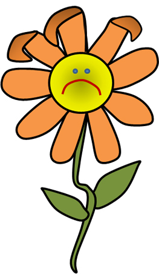
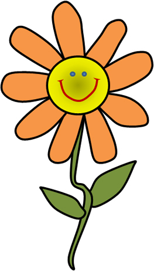

Hi havia una vegada
… una petita flor de color groc i taronja que estava molt i molt trista perquè no podia volar. Tenia unes fulles precioses, d’un color verd molt viu. I quan el sol acaronava els seus pètals semblava que estigués recoberta de petites gotes d’aigua que li donaven un aspecte brillant. Era la flor més bonica del prat.
Però ella sempre estava trista. Les flors que tenia al voltant intentaven cada dia parlar amb ella però ella mai deia res. No volia parlar. Només tenia una il·lusió: volia volar, descobrir què hi havia més enllà del prat, a l’altra banda del turó, volia volar…. Una tarda, quan totes les altres flors feien la migdiada, ella mirava la muntanya que tenia davant i s’imaginava que volava amunt i avall, quan de sobte, va notar un pes en un dels seus pètals.
– Qui ets? , va dir la petita flor – Perdona! Sóc una abella obrera. Estic molt cansada. Puc quedar-me una estona a descansar? Li va dir l’abella a la flor. – És clar que si! Què t’ha passat? – He anat a recollir nèctar a l’altra costat del turó. Avui he fet molts viatges fins allà. M’he cansat molt, vaig massa ràpid. Aleshores he vist que queia perquè ja em sentia molt dèbil. Descansaré una estona aquí amb tu i després tornaré a casa. – On vius?, li va preguntar la flor – Visc en un rusc, allà darrera aquell arbre. – Oh, va dir la flor, i es va posar a plorar.
Aleshores quan l’abella li va preguntar perquè estava tan trista, la flor li va explicar que ella cada dia somiava que podia volar, que podia anar molt lluny i conèixer altres flors, altres animals, altres paratges. I que estava trista perquè sabia que mai podria volar. L’abella, que havia estat escoltant molt atentament, va tenir una idea i li va dir:
Jo et puc explicar tot el que veig quan volo, et parlaré dels colors, de les formes i de les olors, els diré als animalons que em trobo que et vinguin a veure i t’explicaré les històries més curioses dels llocs que puc veure des del cel. Jo seré els teus ulls i tu volaràs amb la teva imaginació a través de les meves paraules. Què et sembla?
– Faries això per mi? li va contestar la flor – Començaré ara mateix…
I així va ser com la flor i l’abella es van fer inseparables. La flor mai més va estar trista. Estava tan contenta que li brillaven els ulls de l’emoció. Totes les flors del prat es giraven cap a ella, li preguntaven coses i ella, emocionada, parlava sobre tot allò que l’abella li explicava.
I vet aquí un gat, vet aquí un gos, que aquest conte s’ha acabat!